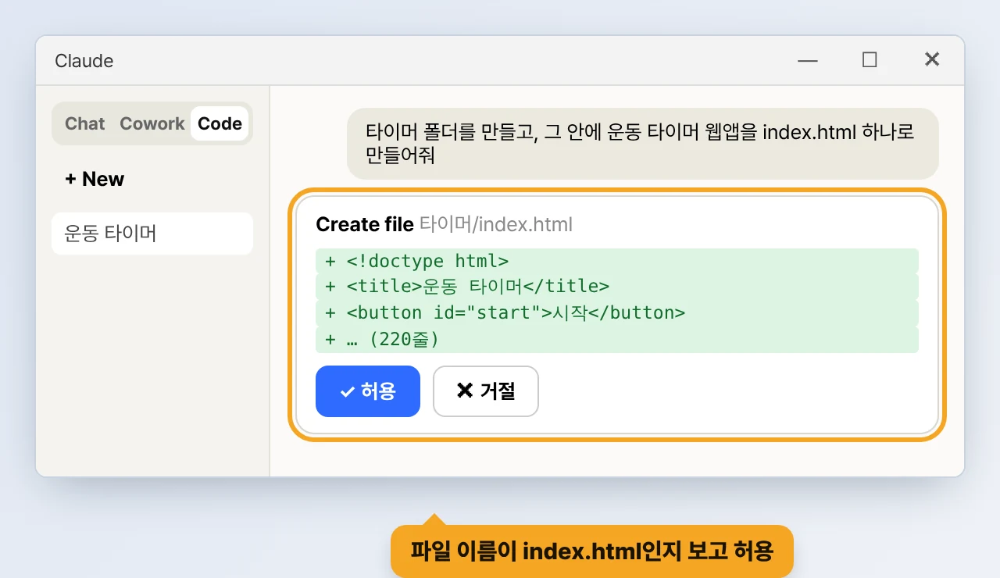
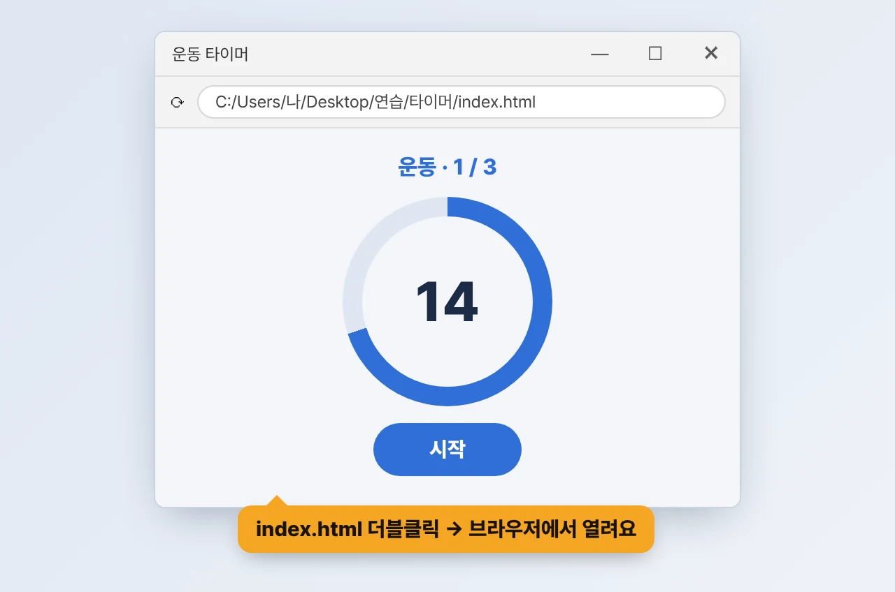
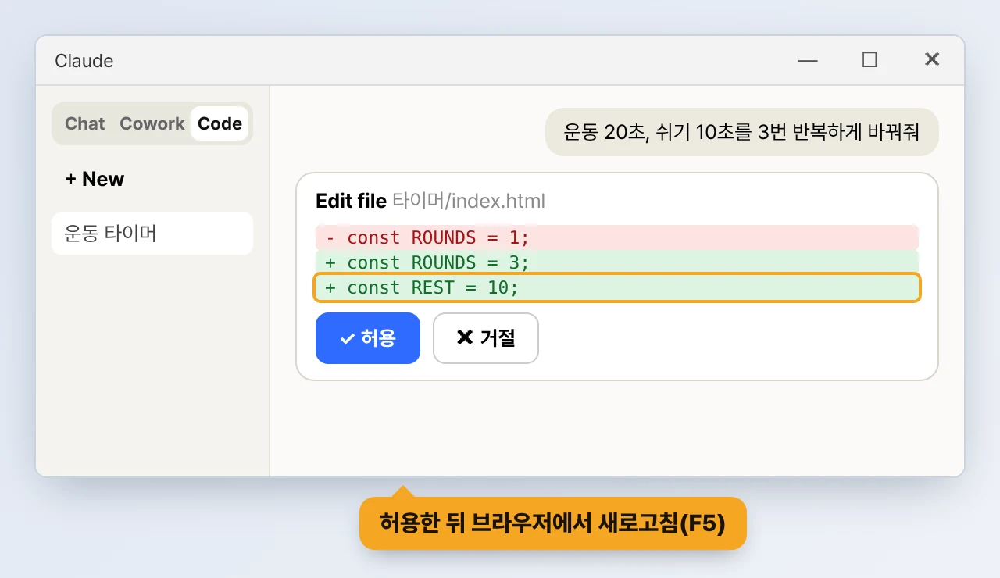
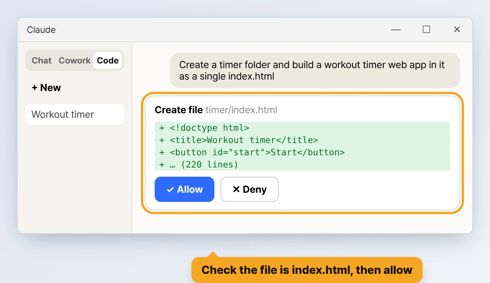
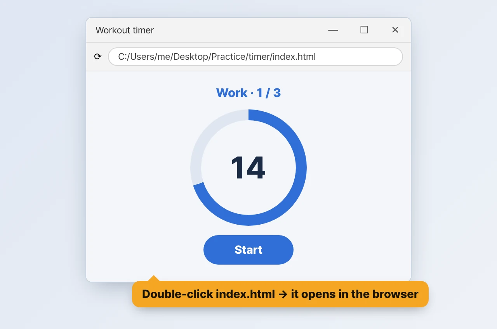
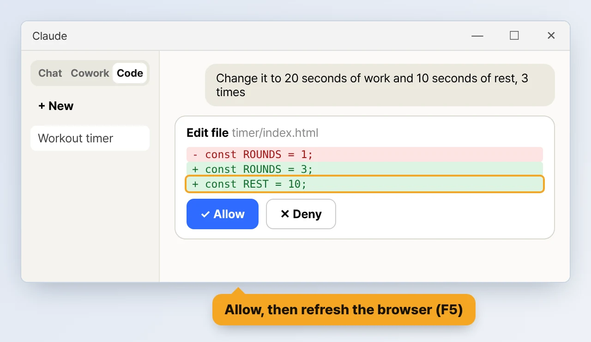

👆 이 내용은 버튼 따라 하는 실습으로도 있어요. 처음이라면 실습으로 직접 해 보고, 이 글은 복습할 때 보세요. 실습 시작하기 →
※ 글 속 그림은 따라 하기 쉽도록 그린 예시입니다. 실제 앱 화면과 모양·글자가 조금 다를 수 있어요.
이게 뭔가요?
코드를 한 줄도 몰라도, Claude에게 말로 설명해서 나만의 앱을 만들 수 있어요. 이번 편에서는 운동 타이머 웹앱을 만들어요. 시작 버튼을 누르면 원 모양 타이머가 줄어들고, 끝나기 3초 전부터 "셋, 둘, 하나"를 읽어 줘요.
| 낱말 | 뜻 |
|---|---|
| 웹앱 | 인터넷 브라우저 안에서 돌아가는 앱. 앱 스토어도, 설치 프로그램도 필요 없어요 |
| index.html | 앱의 화면과 동작을 적은 글 파일. 웹앱의 "첫 페이지"라서 이 이름을 써요 |
| 브라우저 | 크롬·엣지·사파리처럼 인터넷을 보는 프로그램. 이 파일을 열면 앱이 돼요 |
코드는 Claude가 써요. 우리는 무엇을 원하는지 말하고, 결과를 눈으로 확인하면 돼요.
0. 먼저 준비할 것
- 데스크톱 2편까지 마친 컴퓨터 (Claude 데스크톱 앱, 바탕화면 연습 폴더)
- 크롬·엣지·사파리 같은 웹 브라우저
1. 새 대화 열기
Claude 앱 → Code 탭 → + New. 입력 칸 아래가 Local · 연습 · Manual인지 확인하세요.
2. 말로 설명해서 만들게 하기
원하는 앱을 구체적으로 말할수록 잘 만들어요.
타이머 폴더를 만들고, 그 안에 운동 타이머 웹앱을 index.html 하나로 만들어줘. 큰 시작 버튼, 20초 원형 타이머, 끝나기 3초 전부터 '셋, 둘, 하나'를 한국어 음성으로 읽어 주기. 휴대폰 화면에서도 보기 좋게.폴더 만들기·파일 만들기 허락 카드가 나와요. 타이머 폴더 안에 index.html을 만드는지 보고 허용하세요. 코드 내용은 몰라도 괜찮아요.

3. 브라우저로 열어서 써 보기
- 바탕화면 연습 폴더 → 타이머 폴더를 엽니다.
- index.html을 더블클릭하면 브라우저에서 열려요.
- 스피커 소리를 켜고 시작을 눌러 보세요.

4. 말로 고치게 하기
앱 만들기의 진짜 힘은 말 한마디로 고치기예요.
운동 20초, 쉬기 10초를 3번 반복하게 바꿔줘. 쉬는 시간에는 타이머 색을 초록으로바뀌는 줄(빨강·초록)을 보고 허용한 뒤, 브라우저에서 새로고침하세요. (Windows: F5 · Mac: Cmd+R)

잘 안 될 때
| 이런 경우 | 이렇게 하세요 |
|---|---|
| index.html이 메모장으로 열려요 | 오른쪽 클릭 → 연결 프로그램(Mac: 다음으로 열기) → 크롬·엣지·사파리. |
| 소리가 안 나요 | 음량을 확인하세요. 브라우저는 버튼을 누른 뒤에만 소리를 내요. |
| 화면이 하얗거나 이상해요 | 화면을 캡처해서(데스크톱 7편) "이렇게 나와. 고쳐줘"라고 보내세요. |
| 고쳤더니 망가졌어요 | "방금 바꾼 거 되돌려줘"라고 하세요. (데스크톱 6편) |
오늘 배운 것
- 원하는 것을 구체적으로 말하면 Claude가 웹앱(index.html)을 만든다.
- index.html을 브라우저로 열면 앱이 된다.
- 고칠 점을 말하고 허용한 뒤 새로고침하면 바뀐 앱을 볼 수 있다.
얼른닷컴의 EarllnCore(아침 코어 운동 앱)도 이렇게 시작해서 한 마디씩 고쳐 키운 앱이에요. 다음 편에서는 이 타이머를 휴대폰에 설치하고 공개해요.
* The pictures are drawn examples to make the steps easy to follow. Real app screens may look slightly different.
What is this?
Without knowing a single line of code, you can describe an app to Claude and have it built. In this guide you'll build a workout timer web app: press start and a ring-shaped timer counts down, reading out "three, two, one" for the last 3 seconds.
Preview the finished example ↗
| Word | Meaning |
|---|---|
| Web app | An app that runs inside your web browser. No app store, nothing to install |
| index.html | A text file describing the app's screen and behavior. It's the web app's "front page", hence the name |
| Browser | A program for viewing the web, like Chrome, Edge or Safari. Open the file in it and it becomes an app |
Claude writes the code. You just say what you want and check the result with your own eyes.
0. What you need
- A computer that finished Desktop guide 2 (Claude desktop app, a Practice folder on the desktop)
- A web browser like Chrome, Edge or Safari
1. Open a new chat
Claude app → Code tab → + New. Check the buttons under the typing box show Local · Practice · Manual.
2. Describe it and have it built
The more specific you are, the better it builds.
Create a timer folder and build a workout timer web app in it as a single index.html. A big start button, a 20-second ring timer, and read out 'three, two, one' in English for the last 3 seconds. Make it look good on a phone too.Permission cards appear for making a folder and a file. Check it's making index.html inside a timer folder, then click Allow. You don't need to understand the code.

3. Open it in a browser and try it
- Open the Practice folder on your desktop → the timer folder.
- Double-click index.html and it opens in your browser.
- Turn your speakers on and press Start.

4. Change it with words
The real power of building apps this way is changing them with a sentence.
Change it to 20 seconds of work and 10 seconds of rest, repeated 3 times. Make the timer green during restCheck the changed lines (red and green), click Allow, then refresh the browser. (Windows: F5 · Mac: Cmd+R)

If it doesn't work
| If this happens | Do this |
|---|---|
| index.html opens in Notepad | Right-click → Open with → Chrome, Edge or Safari. |
| No sound | Check your volume. Browsers only play sound after you press a button. |
| Blank or odd screen | Take a screenshot (Desktop guide 7) and send it with "This is what I see. Please fix it." |
| It broke after a change | Say "Undo that last change." (Desktop guide 6) |
What you learned today
- Say what you want specifically and Claude builds a web app (index.html).
- Open index.html in a browser and it becomes an app.
- Say what to change, allow it, then refresh to see the new version.
Earlln's EarllnCore (a morning core workout app) started just like this and grew one sentence at a time. Next, you'll install this timer on your phone and share it.